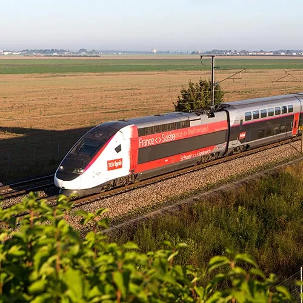
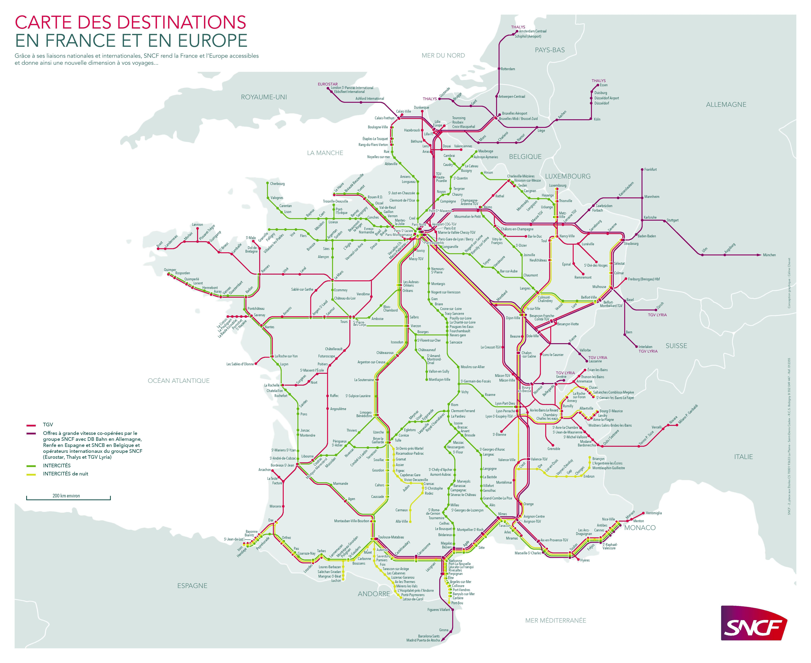
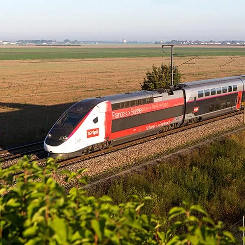
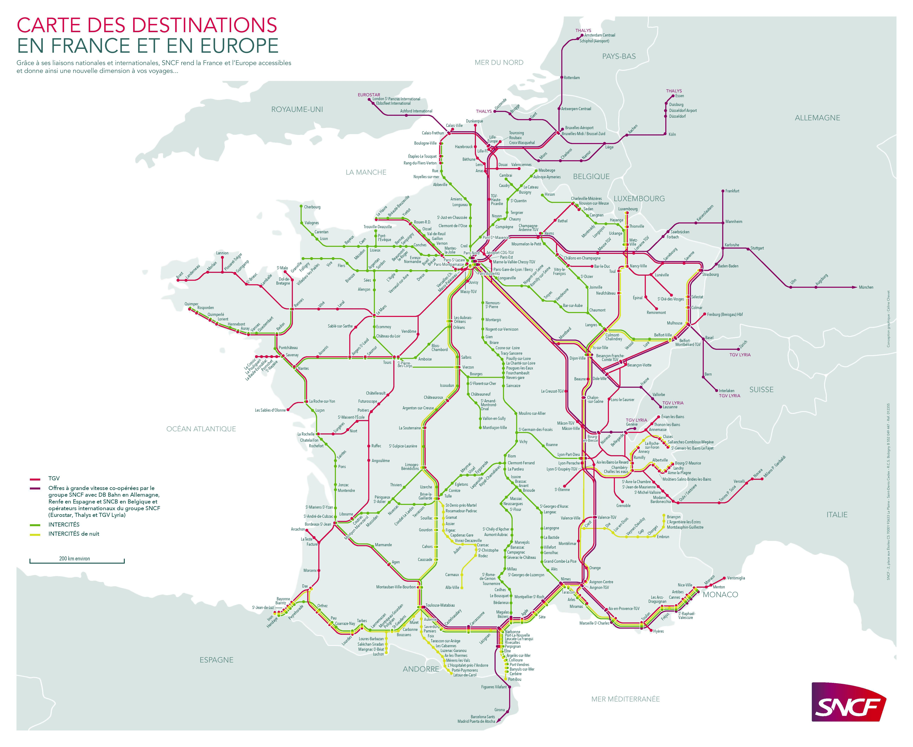

TGV M (SNCF)
SNCF (Société Nationale des Chemins de fer Français) е френската национална железопътна компания и една от най-големите и модерни железопътни организации в Европа и света. Основана през 1938 г., SNCF е известна с високоскоростните си влакове, иновациите в транспортните технологии и екологичните инициативи. Компанията предлага услуги както за вътрешни, така и за международни пътувания и управлява различни видове железопътни мрежи.
Основни услуги и мрежи на SNCF:
1. TGV (Train à Grande Vitesse) – Високоскоростни влакове:
TGV е най-известната услуга на SNCF, представена за пръв път през 1981 г. и до днес е една от най-бързите железопътни мрежи в света. TGV влаковете достигат до 320 км/ч и свързват основни френски градове като Париж, Лион, Марсилия, Бордо и Лил. Международните линии TGV обхващат също дестинации в Белгия, Швейцария, Германия, Италия и Испания. TGV INOUI е нова и модернизирана версия на TGV, която предоставя подобрен комфорт и по-висок клас услуги на пътниците.
2. OUIGO – Бюджетен високоскоростен влак:
OUIGO е услугата на SNCF за достъпни високоскоростни пътувания, предлагаща билети на по-ниски цени с малко по-ограничени удобства в сравнение с традиционния TGV. Тази линия е предназначена за пътници, търсещи икономични опции за пътуване, и покрива популярни дестинации като Париж, Лион, Марсилия и Ница.
3. TER (Transport Express Régional) – Регионални влакове:
TER осигурява регионален транспорт, свързващ градове и селища в отделните региони на Франция. Това са удобни влакове за кратки разстояния и ежедневни пътувания. TER мрежата е финансирана съвместно с регионалните власти, което позволява предоставянето на качествено обслужване на местно ниво и по-достъпни цени.
4. Intercités – Междуградски влакове:
Междуградските линии Intercités свързват основните френски градове и предоставят по-удобна алтернатива на пътуванията със самолет на средни разстояния. Intercités включва както дневни, така и нощни влакове и обслужва градове, които не са покрити от високоскоростните линии на TGV.
5. Eurostar и Thalys – Международни услуги:
Eurostar е международна услуга, която свързва Франция с Великобритания през тунела под Ламанша, обслужвайки Париж, Лондон и Брюксел. Thalys е високоскоростна мрежа, която свързва Франция с Белгия, Холандия и Германия. Тези линии предоставят бърз и комфортен начин за пътуване в северозападна Европа.
Иновации и устойчивост:
1. Зелена енергия и устойчив транспорт
SNCF има амбициозна цел за намаляване на въглеродните емисии и вече работи с 90% електрифицирани линии. Компанията залага на възобновяеми енергийни източници и технологии за понижаване на енергийното потребление. Въвеждат се нови модели влакове с хибридни и водородни двигатели, които още повече ще намалят въглеродния отпечатък на железопътния транспорт.
2. Дигитални технологии
SNCF инвестира в модерни дигитални платформи, които улесняват пътуването. Приложения като SNCF Connect предлагат информация за разписанията в реално време, електронни билети и възможност за лесно планиране на пътуванията. Освен това SNCF разработва и внедрява изкуствен интелект и големи данни, които помагат за оптимизиране на мрежата и предвиждане на нуждите на пътниците.
3. Нови инициативи за подобряване на комфорта и безопасността
SNCF обновява вагоните в TGV и TER, за да подобри комфорта на пътниците, като добавя ергономични седалки, удобни пространства за багаж и подобрени климатични системи. Безопасността е ключова, и затова влаковете разполагат с модерни системи за наблюдение, а поддръжката на линиите и оборудването се извършва с най-висок стандарт.
SNCF продължава да бъде символ на модерния железопътен транспорт, предлагайки бързи и устойчиви решения за пътувания, които се стремят да удовлетворят потребностите на съвременните пътници.
 


